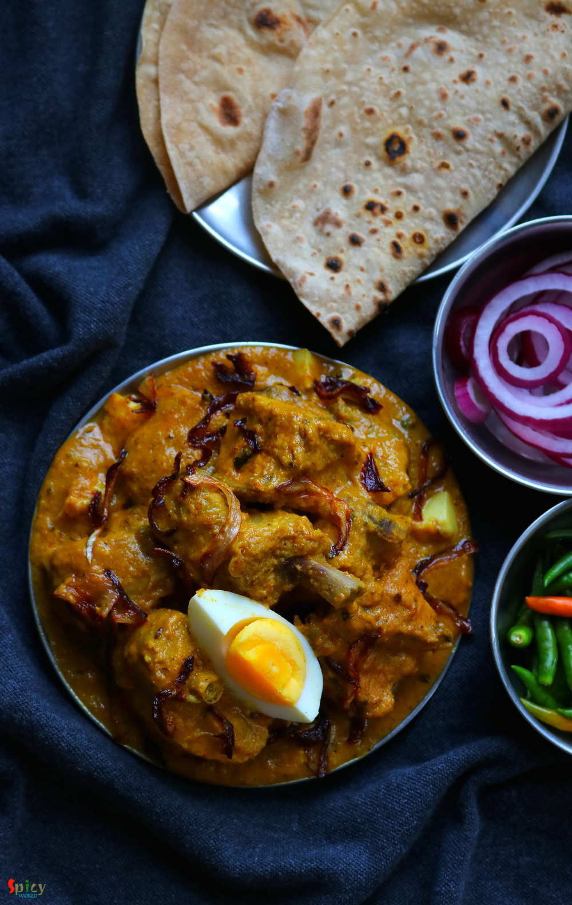

Simple and Easy Recipes
Mughlai Chicken Curry / মুঘলাই চিকেন কারি
© 2016 Spicy World, Published on: Sep 13, 2018
Mughlai chicken curry is a thick, nut based gravy dish from the Mughlai (awadhi) cuisine. The sauce of this Mughlai Chicken curry is very rich so you can serve this with naan, roti or light pulao. In this recipe first marinated chicken will be fried then cooked in onion, tomato gravy with lots of other flavorful ingredients. Last Saturday my family enjoyed it thoroughly, now its time for you to enjoy the detailed recipe with video.

Ingredients
- 700 grams of chicken (skinless).
- 2 medium onion, sliced.
- 1 Tablespoon of fresh ginger, garlic and green chili paste.
- 1 tomato, cut into chunks.
- 8-10 almonds (soaked then peeled).
- 3-4 Tablespoons of yogurt.
- Spice powder (1 Teaspoon each of turmeric powder, red chili powder, roasted cumin and coriander powder).
- Salt as per your taste.
- Whole spices (1 small cinnamon stick, 3 green cardamom, 3 cloves, 5 black peppercorns).
- 1 Tablespoon of condensed milk (you can use 2 Teaspoons of sugar).
- 5-6 green chilies.
- 1 Teaspoon of dry roasted fenugreek leaves or kasuri methi.
- 2 Tablespoons of heavy cream.
- 2 hard boiled eggs, chopped.
- 4 drops of kewra water.
- 1 Teaspoon of garam masala powder.
- 5 Tablespoons of cooking oil.
- 2 Teaspoons of ghee or clarified butter.
- Water.


Steps
Marinate the chicken with all of the spice powder, yogurt and ginger, garlic and green chili paste for 2 hours.
Heat 2 Tablespoons of oil and fry onion slices for 3 minutes.
Then add tomato and almonds. Cook for 3 more minutes.
Then put them in a blender along with little water and blend them to a fine paste.
Noe heat the remaining oil.
Saute the whole spices for few seconds.
Then add the chicken and cook on high flame for 10 minutes.
Add salt in between and keep cooking.
Then add onion tomato paste and cook for 20-30 minutes by covering the pan.
After that add green chilies and condensed milk. Mix well.
Add roasted kasuri methi, heavy cream, chopped eggs, kewra water and garam masala powder. Mix well.
Lastly add ghee and turn off the heat.
Your delicious mughlai chicken curry is ready ...
Serve this hot with roti, naan and light pulao.
")